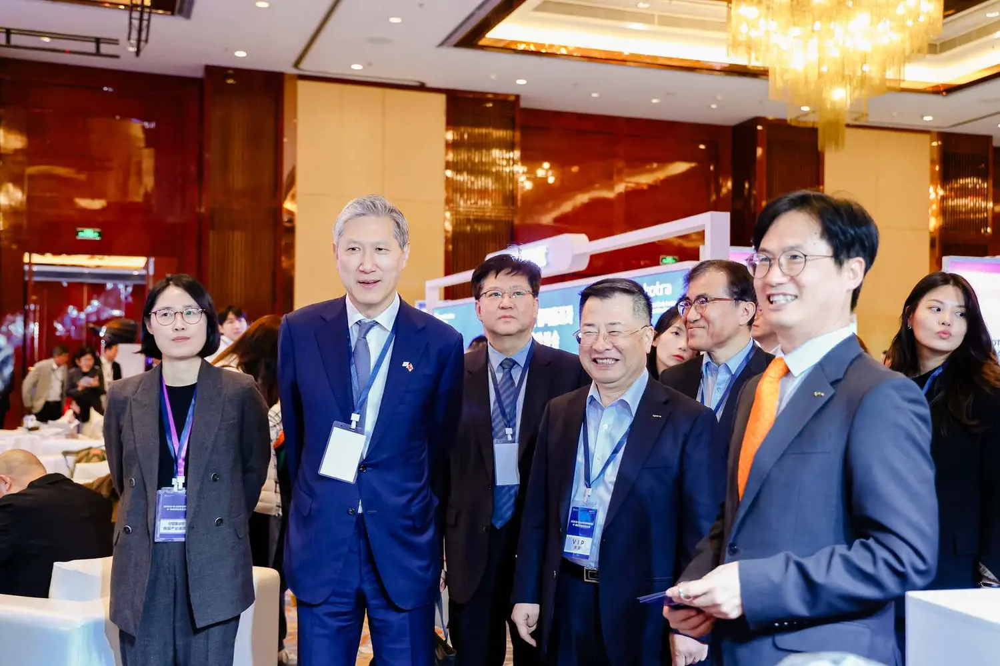

OPERATIONS
현지 운영Local Operations本地运营
조사·협의·현장 조율Research and field coordination调研、洽谈与现场协调
LOCAL & GLOBAL NETWORK
프로젝트의 목적과 단계에 따라 중국 현지 운영, 콘텐츠, 커머스와 교육 분야의 파트너를 구성합니다.Partners across local operations, content, commerce and education are assembled around each project.根据项目目标与阶段配置本地运营、内容、商业与教育领域伙伴。

NETWORK STRUCTURE
시장, 제품, 채널과 일정에 따라 필요한 전문 영역과 역할을 구분합니다.Expertise and roles are defined by market, product, channel and schedule.依据市场、产品、渠道与日程明确专业领域及角色。

OPERATIONS
조사·협의·현장 조율Research and field coordination调研、洽谈与现场协调

MEDIA
플랫폼·인플루언서·방송Platforms, influencers and live平台、达人与直播

COMMERCE
채널·주문·물류Channels, orders and logistics渠道、订单与物流

PROGRAM
대학·기관·K-콘텐츠Universities and K-content高校、机构与K-内容
GLOBAL CREATOR COMMERCE
이탈리아, 인도, 홍콩, 일본과 중국을 우선 연결하는 크리에이터·브랜드·커머스 파트너 네트워크입니다.A cross-border network initially connecting Italy, India, Hong Kong, Japan and China.优先连接意大利、印度、香港、日本与中国的跨境网络。